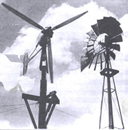
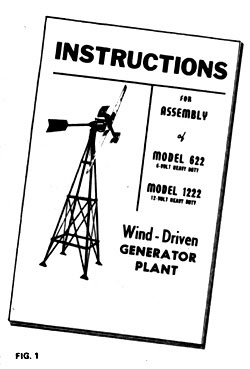
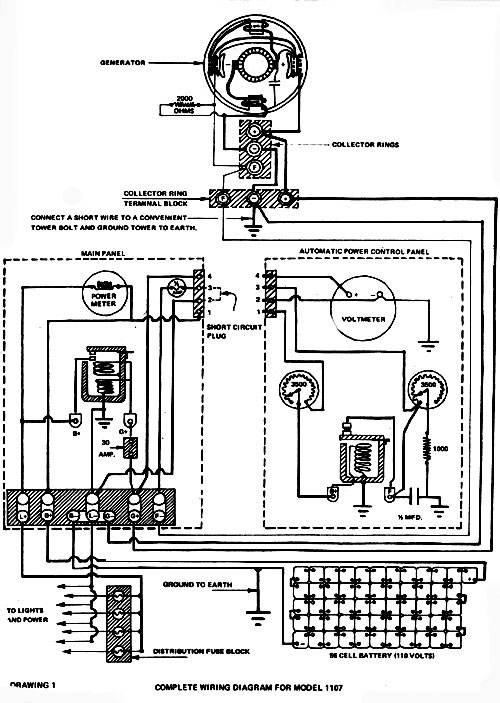
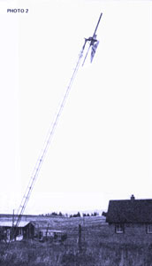
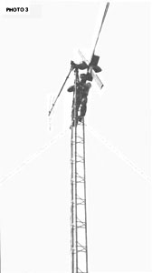
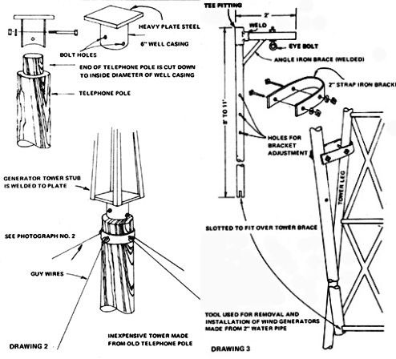
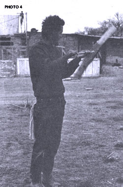
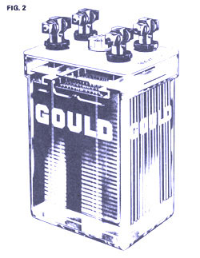
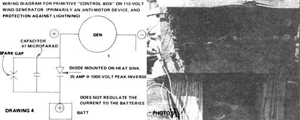
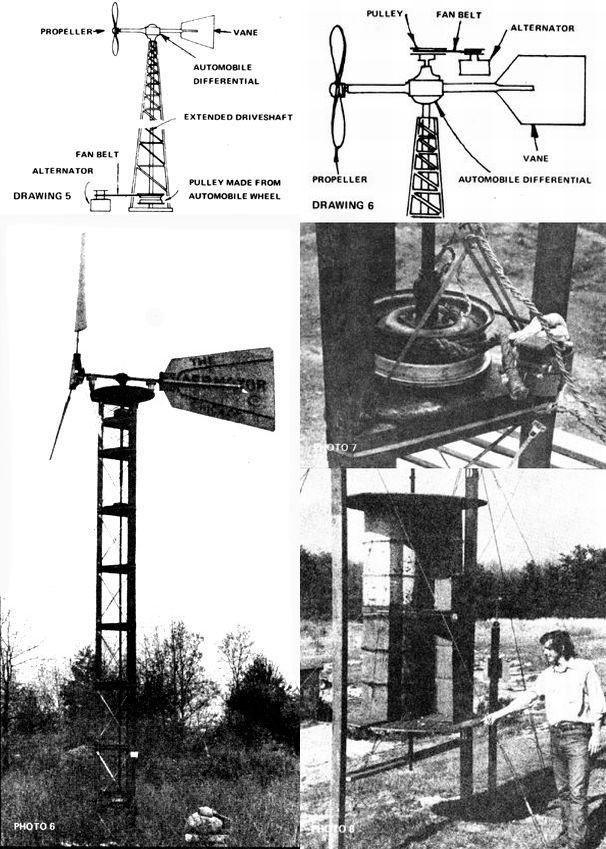

A little over a year ago, I wrote a short article for Organic Gardening and Farming magazine. In that piece, I described our life on a small New Mexico homestead ... and how we planned to utilize non-polluting sources of energy such as methane gas, solar heating and wind generators.
The response to the article was nothing short of amazing. I received correspondence from all over the United States, Canada, France and the Philippines . . . and most letters requested further information about the alternate energy sources I had named.
It didn't take long for me to realize that my optimistic enthusiasm for my subject was a bit naive and premature ... I didn't really know any more about alternative sources of energy than the folks who were requesting further information yet I was being regarded as an expert in the field!
I answered the letters as best I could, then set out to learn as much as possible about the subject ... which has now become almost an obsession with me.Through the generosity of the Verde Valley School of Sedona, Arizona, I was able to make an 8,000-mile trip this spring with six students ... a trip during which we traveled across America seeking out information from the people who were experts in alternate sources of energy. The story of that journey, and the information we gathered, will-we hope-soon be published as a book. Until then, I'd like to share with MOTHER's readers some of the information we gathered about wind generators.
The first wind generator. as far as I'm able to discover, was built by the Arctic explorer Fridtjof Nansen in 1894. Icebound in the polar sea, Nansen rigged up a Holland-type windmill to drive a dynamo which charged batteries. He was enjoying electric lights in the vicinity of the North Pole when the houses of New York and London were still illuminated with kerosene and gas.
Sometime around 1935 or '36, the Wincharger Corporation of Sioux City, Iowa began production of wind-electric plants for use by farms and homesteads far from powerlines. Wind generators were then used extensively in some rural areas up until the early fifties, when the Rural Electrification Administration at last brought power to most of the country. The Wincharger Corporation finally ceased production on all models except a small 200-watt unit in 1953 and the Jacobs Company of Minneapolis, Minnesota-another manufacturer of such equipment-stopped building its wind generator sometime around 1957.
With the energy crisis and air pollution becoming problems of concern (most electricity these days, in the Southwest at least, comes from coal-fired generators which are saturating our once clean skies with tons of filth), more and more people are looking for alternative sources of power. Do wind generators offer a valid solution? The answer is both yes and no. To understand such a seemingly ambivalent reply, we first must understand some basic facts of electricity.
The three most important units of electrical measurement which concern us are: volts, amps and watts ... and the first two are often confused
The easiest way to remember the difference between amps and volts is to think of amps as "current" which is measured in much the same way as the volume of water in a pipe. And, if amps are volume, then volts can be thought of as "pressure" or the amount of push behind the volume of water. This is an important distinction: There's a world of difference between the flow of a swift mountain brook (high voltage, low amperage), and the flow of sluggish water in a large, slow-moving river (high amperage, low voltage). The analogy is not perfect but it gives you the idea.
Obviously, the relationship between amps and volts is very important ... and the combination of the two when multiplied together is the total amount of electricity available. This total is measured in watts. Volts times amps, in other words, equals watts. The very first thing that should concern us when we consider the installation of a wind generator is: HOW MANY WATTS DOES IT PRODUCE?
The answer to the question: do wind generators offer a valid solution to the electrical needs of folks concerned about pollution, the energy crisis and self-sufficiency-then-hinges on the number of watts required by the user.. A 200-watt generator might well serve a couple living simply in a small dome or one-room cabin, but would hardly be adequate for a family homestead which wants electric lights plus a deepfreeze, arc-welder and power tools.
The easiest way to visualize the output of any given generator is to imagine the number of 100-watt bulbs it will fully light at one time. A 200-watt generator will handle two 100-watt bulbs; a 3,000-watt unit will simultaneously power thirty 100-watt bulbs. To find out how much capacity you need, just add up the total wattage of all of the light bulbs and appliances you plan to use ... and tack on a few more for good measure.
What kinds of wind generators are available today and where can a person get one which will fulfill his energy requirements? There are three ways to go:[1] you can buy a new wind generator, [2] you can buy a used one, or [3] you can build one yourself from automobile components.
Since Wincharger ceased production of its high-wattage machines, and Jacobs went out of business entirely, the only source I know of for a new wind generator that produces more than 1,000 watts is the Quirk's Company in Australia.
I recently (three months ago) wrote airmail to Quirk's and requested information on their machine (I even enclosed return postage and offered to pay for any data they might send). To date, I've received no reply ... so it appears that the firm is not overly interested in the U.S. market. Henry Clews-of East Holden, Maine-is said to be the American agent for this wind generator. I wrote to him at the same time I sent a letter to the Australian firm and, again, have received no reply. It's beginning to look as if the Quirk's machine is not easily obtainable in the States.
(NOTE. Between the time this was written and press time, I received a most informative packet of information from Henry Clews' Solar Wind Company. Clews is the dealer for several models of high-wattage machines from Australia and Switzerland. Anyone even slightly interested in wind generators owes it to himself to send $1.00 to the Solar Wind Company, RFD 2, East Holden, Maine 04429, and request Henry's publication, Electric Power From the Wind. This pamphlet is probably the definitive guide to wind electric plants to date.)
Dyna Technology, Inc., Box 3263, Sioux City, Iowa 5 1102 now handles the only Wincharger still produced in the U.S.... a 200-watt machine which sells for around $400. The folks at that company were most helpful people, and kindly gave me permission to publish some of their literature. The 20-page instruction manual (Fig. 1) for their 200-watt unit is full of valuable information about wind generators in general.
If you need no more than 200 watts and aren't into budding your own generator, the Dyna Technology machine might be just what you need. Most of them are presently being sold in Latin America and the Pacific Islands for the purpose of charging radio batteries.
For three dollars, the Bucknell Engineering Co., 10717 East Rush St., South El Monte, California 91733, will sell you information about a 250-watt wind generator. They also offer the completed unit for $1,082.
Unless you have a lot more money than I do, such low-wattage new wind generators are out of the question. And, until someone goes into production on a high-wattage machine at a reasonable price, most people will have to buy a used unit or build their own.
Just about anywhere in the rural Great Plains States, wind generators were common sights on farms during the 1930's and 40's. When the REA finally strung its wires to these localities, the machines were often taken down and sold for scrap. Occasionally, however-after a lot of backroad driving, and many conversations with farmers old enough to remember them-one can still find a-few of these generators still standing. (Usually they weren't taken down because most folks aren't into the hair-raising job of working with upwards of 400 pounds of machinery while tied onto the top of a high tower ... an experience roughly analogous to removing an engine from an automobile at an altitude of 45 feet.
The two most common wind generators were the Wincharger and the Jacobs ... respectively the Chevrolet and Cadillac of homestead wind-electric plants. The Wincharger came in several models, from 6 to 110 volts and from 200 to 1,200 watts. The Jacobs, a much heavier machine, was built in 32- and 110-volt configurations and ranged from 1,500 to 3,000 watts. The 32-volt models of both makes were the most popular in their day, and of the two, Wincharger is the brand you're most likely to encounter now. The Jacobs is currently quite rare, but a real find if you turn one up in reasonably good condition.
Almost any old wind generator you may locate is more likely than not in need of extensive restoration.It's unusual to find one that still has usable propellers ... these, being made of wood (with the exception of some later models of the Wincharger, which had aluminum props), are the first parts to deteriorate. After all, the machine has probably stood untended for well over 25 years of summer thunderstorms and winter blizzards! It is even rarer yet to find a generator that still has the original control box, though one can be made up by most any electrician worth his salt.
Is it worthwhile to try to restore one of these old wind-electric plants? Most definitely yes! If you're selective, and can locate a machine that doesn't have unrepairable damage-such as broken castings or missing major parts-a little bit of enjoyable restoration will reward you with up to 3,000 watts of "free" electricity. Anyone who has rebuilt a Model A Ford, or likes to fool around with old cars will feel right at home tearing into a 1940-vintage wind generator. It is my opinion that this is a better route to go than to construct a generator out of automobile components ... an endeavor which can result at best in no more than 600 watts. (Remember, that's enough juice to light only six Kilowatt bulbs ... not a very impressive yield for your time and money.)
My main need for electricity on our one-acre homestead in New Mexico is for power to operate a deep freeze ... almost a necessity for folks who raise their own food and are shooting for total self-sufficiency. Some foods can't be dried satisfactorily ... and while canning is certainly one solution to that problem, fresh-frozen food retains even more of its vitamin content and just plain tastes better.
Someone may prove me wrong, but I don't think you can run a deep freeze on a 600-watt wind generator adapted from automobile parts. (Not and have enough juice left over for lights and power tools.) If you're interested in more than lighting a few bulbs or running a low-wattage stereo set, think in terms of something greater than a thousand watts of power.
OK. After from a few days to several weeks of bumpy roads and elderly farmers who think you're mildly insane for wanting a 30-year-old piece of "junk", you've finally located a wind generator that looks as if it could be made to work again. There it is, 45 feet up in the air ... a glorious piece of rusted cast iron with a splatter of .22 holes leaking light through the tail vane. What's it worth?
You may be so overjoyed that you've finally found one, that you'll be willing to shell out whatever the farmer asks for the wind generator. ("Well, I paid over two thousand dollars for the whole system back in 1943 ... would you give me $150 for it?")
That may not sound like much money, but bear in mind that the "whole system" included the batteries, which 999 times out of 1,000 were sold to a scrap dealer back in 1949 when the REA came in. Also, the generator has endured tornadoes, been struck by lightning six or seven times, and is all but rusted into one solid chunk of cast iron and copper wire. Add to that the fact that YOU are the one who has to take it down from that 45-foot tower, and the price rapidly drops to something like $20.00 or $30.00. (This for the generator alone . . . "tower included" raises the price.)
The most I ever paid for a wind generator was $100 for a Jacobs (the best machine made) that put out 2,500 watts , was complete, with no busted parts, and-moreover-had been carefully removed from its tower in 1949 and stored ever since in a nice warm barn.
The reason I offer these price guidelines is because I'd hate to see the cost of used wind generators inflated to beyond their true value, like everything else seems to be these days. Also remember that you're going to have to put considerable time and money into making the thing work again.
On a recent trip out on the plains I managed to scrounge up seven old wind generators: four Winchargers and three Jacobs. Out of the seven, only three are complete enough to be usable. (In learning by experience I made a few mistakes and bought some junk.) I only purchased one tower, mostly because all those generators constituted an overload for my truck and trailer, and towers are readily available in my part of the country, (Any windmill stand works just fine and support for a generator can be made from an old telephone pole for very little money ... see Drawing No. 2 and Photo No. 1.)
So you've bought the generator-you're satisfied, the fanner's satisfied-now how do you get the blamed thing down? Believe me, unless you're a telephone lineman or a circus tightrope walker, working on top of a tower is a scary proposition. Once you've tied yourself in with a safety belt, it isn't so bad ... except when the wind starts blowing and the generator wants to move around with it! (Even with the vane turned "out of the wind" so that the tail is horizontal with the plane of the propeller, the mechanism will still want to turn when the breezes get gusty.)
Do not, I repeat, DO NOT delude yourself into thinking that the tower can be lowered safely with the generator still in place! I made this mistake on the very first machine I took down . . . and completely destroyed it (see Photo No. 2). I don't know much about some of the principles of physics, but it seems to be a law of nature that an object which weighs 400 pounds on top of a vertical tower will come to weigh more than a ton as the structure leans toward the horizontal.
In the case of our infamous first adventure, we tried to lower a tower and generator with a line tied to the back of my pickup truck while two men "steadied" the assembly by holding lines perpendicular to the lowering line. The photograph (No. 4) was taken only an instant before the rig got out of control and crashed into the ground ... bending the tower, breaking the cast-iron generator housing and gear box in several places and plowing a big hole in the soil. It was a lesson that could have been tragic ... anyone struck by the failing tower would have been killed instantly.
All right then: how do you get wind generators down? After talking with farmers who remember putting them up, and having the rare good fortune of obtaining an operating and installation manual for an old Wincharger, we were able to construct a device from two-inch water pipe which served the purpose (see Drawing No. 3).
This device is securely bolted to the tower with enough room above the generator to lift it free of its mounting with a block and tackle. Remove the propellers, vane and any other easily removable parts from below with the help of an assistant on the ground who handles the block and tackle. The generator itself will, of course, be the last and heaviest load.
Bear in mind that many of the nuts and bolts you'll be working with are likely to be quite rusty. A can of Liquid Wrench or a similar product will help considerably in loosening them. Be most careful of parts under tension ... it's a hair-raising experience to have a spring-loaded tail vane pop loose on you when there's no place to duck! Wear a hard hat in any case: I wish I'd had one when I was up there (see Photo No. 3 and learn from my mistakes).
You'll also find that a carpenter's tool pouch, or a pouch such as telephone linemen use, will be a good investment. It's most inconvenient to have your pockets bristling with screwdrivers, wrenches and hammers . . . and a constant bother to have to worry about the possibility that a tool may fall from your pocket and brain your buddy on the ground.
Once the generator is off the tower you're ready to haul it home and tear it down to see what makes it tick. If you didn't buy the whole tower, be sure you take the "stub" . . . the top five feet or so which contains the generator's pivoting mechanism and the all-important slipring collector. (This is the device which allows the generator to turn in any direction without twisting the wires which lead to the battery bank.)
Be double-sure to ask the former owner for any wires and control boxes which go with the generator. If you're fortunate, he'll have them stashed away in the toolshed . . if not, you'll just have to have an electrician make up a control box for you (see the wiring diagram-Drawing No. I-reproduced from an old Wincharger manual). If your generator is a 32-volt model, and you don't plan on installing a device which converts 3 2 volts DC to 110 volts AC, remember to ask the seller if he has any old 32-volt DC motors lying around. He'll have no more use for them but you'll certainly find them handy for powering tools, etc.
I now have a 32-volt (1,200-watt) Wincharger, and a 32-volt (2,500-watt) Jacobs . . . both of which I will install on my homestead to give me 3,700 watts of power.The Wincharger should be up and working by the time this is published. It now only awaits brushes, a rebuilt prop and a control box.
Brushes for the Wincharger are, of course, no longer manufactured, but they may be purchased on special order
(custom made) from the Becker Bros. Carbon Co., 3450 South Laramie Ave., Cicero, Illinois 60650. The cost is $35.00 for ten brushes. (Although a generator only needs two brushes, you should buy extras ... they eventually wear out and must be replaced.) Send Becker Bros. an old brush when you place an order so they'll know what to make up for you.
What about rebuilding, or in most cases, making a propeller? I haven't tackled that one yet, but am not worried about it. LIFESTYLE! NO. 3 has an article (see page 47 of that issue) on how to construct a wooden prop, and the November 1972 issue of Popular Science describes a propeller made of expandable paper and fiberglass. Actually, a wind generator prop is not as difficult to make as it may seem at first. A friend of mine crudely hacked one out of an old 2 X 4 in a few minutes ... and it turned up a storm when held faced into the wind (see Photo No. 4).
The control box poses my third problem. What goes into it, and how is it constructed? Knowing as little as I do about electricity, I'm going to entrust that one to a qualified electrician. With the help of an old wiring diagram from the 32-volt Wincharger manual, we should be able to put one together without much trouble. A "control box" of sorts can be as simple as the one in Photo No. 5 and Drawing No. 4, which really amounts to an anti-motor device and protection from lightning.(A DC generator will act as an electric motor if the current is reversed. Without an anti-motor device, the juice from the batteries will "motor" the generator when the wind isn't blowing. . . and this will eventually discharge the storage units completely.)
And what about batteries? What kind are best? You can get a lot of different opinions on the subject, but the kind of storage cells used by the old-timers I visited out on the plains were large industrial-type 2-volt units connected in series to add up to the voltage of the generator. (Nine times out of ten, that was 32 volts ... or sixteen 2-volt cells hooked up to make one big 32-volt battery.)
These units are still available from the industrial division of any battery manufacturer. The flyer shown here is from Gould, Inc. (Fig. 2), but Exide, Delco and others offer similar units. They're heavy (upwards of 70 pounds each), and expensive (several hundred dollars for a set) ... but in the long run probably the most efficient and economical way to go. Some units have a life expectancy of 25 to 30 years . . and if you prorate their initial expense over that period of time, your costs are really very reasonable when compared to what you'd otherwise be paying for Reddy Kilowatt's pollution-producing electricity. Probably the minimum capacity you'll want to consider for efficient operation is 180-amp-hour batteries. (The 110-volt Wincharger manual speaks of batteries in the 240- to 424-amp-hour range.) If you can't afford the big units, golf cart or diesel truck batteries will be a better bet than ordinary automotive units.
Perhaps you can't afford a new wind generator, can't locate a used one in restorable condition and really don't want electricity for much more than a small stereo set and a few 25-watt light bulbs.In that case, if you're a do-it-yourself type who enjoys tinkering with mechanical devices, you can build your own wind generator out of automobile parts. I've seen several homemade units now (and perhaps it was only coincidental that none of them were working at the time of my visit).
About the most output you can expect from a wind generator made from car parts is 600 watts. I must confess that I can't get very excited about putting in the necessary time, energy and money for such a small return ... but I'll try to withhold my prejudice while I tell you what I've managed to learn about home-constructed rigs.
The November 1972 issue of Popular Science magazine has an article with detailed plans for budding a wind generator. While the design is very interesting, and the concept for making the propellers is downright brilliant, please notice that no where in the article does it tell you how many watts the machine will produce. I visited the commune in Wisconsin where that generator was built and-while the designer, Hans Meyer, wasn't there on the day I visited-one of the residents showed me where the generator tower was lying in the weeds at the back of a pasture. He told me that the unit hadn't produced enough watts to be practical and had been abandoned.
Issue 20 of MOTHER contains an article by Jim Sencenbaugh which describes a 500-watt wind generator. The piece includes an offer to sell detailed plans for building the rig and-from the tone of the article and the photographs and drawings which accompany it-the machine looks like a good one. If you don't need any more than 500 watts, Sencenbaugh's design could be the unit to go for.
Eugene Eccli-co-editor of Alternate Sources of Energy, and an instructor at New Paltz College in New York-built a wind generator, with the help of his students, from one of Hans Meyer's designs (Photo No. 6). The concept is ingenious and uses an automobile differential to transfer rotation from the horizontal plane of the propeller shaft to a vertical plane perpendicular to it (see Drawing No. 5).
The "drive shaft" of Eccli's setup is lengthened to accommodate the high tower, and an ordinary automobile wheel is attached at the bottom to provide a "pulley" which runs a fan belt to an automobile alternator (see Photo No. 7). The main difficulty with this arrangement is that it generates considerable friction, and the unit will only put out usable amounts of energy in extremely high winds. Also. gear oil tends to leak from the differential housing because of the unusual angle at which the unit must be mounted on the tower.
One solution-which solves most of the friction problem and stops the oil leakage-is to mount the differential so that the drive shaft stub (with pulley and generator attached) points up instead of down (see Drawing No. 6). The New Alchemy Institute in Woods Hole, Massachusetts thought this idea up, and it seems to work. Their generator was down for repairs when I visited them, however, so I have no photograph of the unit. This solution, of course, requires that the generating unit be mounted at the top of the tower, and that means periodic forays "up there" for routine maintenance. (You may as well face it: If you plan on getting into wind generators, you'll have to get used to climbing towers!)
The New Alchemists are also experimenting with a wind pump made from 55-gallon drum halves (Photo No. 8). This is based on a desi that the Amish have used for years to pump water, and my feeling is that if the device were geared up properly it could be used to generate electricity.Complete plans for this machine are available for about $2.00 from:
Brace Research Institute MacDonald College of McGill University Ste. Anne de Bellevue 800 Quebec, Canada.
Ask for Do-It-Yourself Leaflet No. L-5, entitled: How To Construct a Cheap Wind Machine for Pumping Water. (I'm not absolutely certain of the price of this publication, but if you send them $2.00 you'll probably be OK.) The machine is most impressive to see in operation, and it could probably be easily geared up with a bicycle chain and sprockets for the production of electricity.
To date,the above is the extent of what I've learned about generating electricity from the wind. I have not yet installed my own two wind generators, so I cannot offer any information about what that will entail. All signs, however, seem to indicate that wind generators are a very practical solution to the energy, pollution and self-sufficiency problems of individuals living on the land.
I don't hold much hope that wind-driven generators will ever be able to solve the power needs of New York, Chicago or Los Angeles ... but living as I have for the past three years I've come to feel that New York, Chicago and Los Angeles will get just about what they deserve. When the Red Cross is providing disaster relief to the denizens of Megalopolis, I'll be eating fresh-frozen peas from my garden ... peas which were preserved in a deepfreeze powered by the wind!
Although people still refer to wind generators and wind pumps as "windmills", the differences between windmills, wind pumps and wind generators are obvious when you think about them.
A windmill is technically a machine powered by the wind for the purpose of grinding grain into flour. The old Dutch windmills were generally used for this purpose.
The commonly-referred-to "windmill", found on farms and homesteads all over America, is actually a wind pump, since its purpose is to pump water. Bona fide windmills are actually very rare in this country.
To call a wind generator a windmill is equally erroneous, since the only thing the two have in common is that they're powered by a moving air mass. One may as well confuse motorcycles with chain saws because each makes use of a similar gasoline powered engine.
|
 picture |
 |
 |
|
 |
 |
 |
|
 |
 |
 |
|
 |
|
|